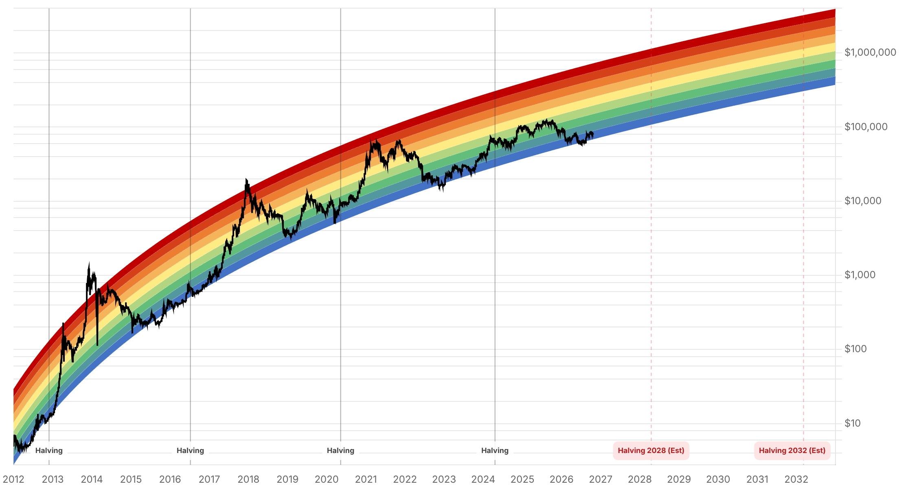

Reporte financiero
BTC cotiza en USD 82.699,03 en vivo (07:18 UTC), -0,29% frente al cierre anterior (USD 82.940,14), tras un salto significativo el martes 20: el precio cerró ayer en USD 82.941,00, rompiendo al alza la banda de USD 81.400-81.900 en la que había quedado contenido el lunes, y hoy se mantiene en ese nuevo rango (USD 82.600-83.100) en vez de retroceder a la zona anterior. El catalizador más claro de ese movimiento, confirmado hoy por primera vez, es el dato de flujos de ETF de Bitcoin del lunes 19 de octubre: entradas netas de USD 526,6M, el mejor día desde el 22 de septiembre, liderado casi en su totalidad por IBIT de BlackRock (+USD 665,2M), con salidas de FBTC (-USD 83,6M) y GBTC (-USD 54,9M). Ese dato reduce el déficit acumulado de octubre de unos USD -617M (hasta el 16 de octubre) a USD -90,6M -una mejora sustancial que el reporte de ayer dejó como pendiente de confirmar-. El Fear & Greed Index saltó de 55 a 63, el salto diario más grande reportado en esta serie de informes, reflejando ese combo de precio + flujos. También se confirmó hoy el PBI del tercer trimestre de China -pendiente desde el reporte de ayer-: creció 4,5% interanual (vs. consenso de 4,4% y el 4,3% del segundo trimestre), con el agregado de los primeros nueve meses en 4,6%, dentro de la meta oficial de 4,5%-5,0%. El detalle sectorial confirma la lectura de 'crecimiento desbalanceado' que ya se anticipaba: exportaciones e importaciones subieron 18,8% interanual y la manufactura de alta tecnología 14,3%, pero la demanda doméstica sigue débil (ventas minoristas +2,6%, inversión en activos fijos -7,2%, inversión inmobiliaria -20,6%). No se encontró comentario de analistas específicamente nuevo sobre el movimiento de precio de ayer -se deja constancia de ese vacío en vez de reciclar las citas de Glassnode/Binance del reporte anterior como si fueran nuevas-. El resto de los ejes no tiene novedad: Strategy/Saylor sigue en 848.250 BTC sin compra nueva confirmada; el plazo de Blumenthal a Cantor Fitzgerald por su vínculo con Tether vence en 2 días (23 de octubre), sin respuesta pública; la apelación del fallo sobre los 61.000 BTC incautados en el Reino Unido sigue con resolución esperada en 2027; y la Clarity Act sigue estancada desde el fracaso de cloture del 15 de septiembre, sin fecha de nuevo intento.
BTC cerró el martes 20 de octubre en USD 82.941,00, superando con claridad la banda de USD 81.400-81.900 en la que había quedado contenido el lunes, y hoy se mantiene en el nuevo rango de USD 82.600-83.100 (precio en vivo: USD 82.699,03, 07:18 UTC, -0,29% vs. cierre anterior de USD 82.940,14 -una variación intradía menor, no un retroceso hacia la banda previa-). El Fear & Greed Index acompañó el movimiento con el salto más grande visto en esta serie diaria: de 55 a 63 puntos, sin salir de la zona 'Greed' pero acercándose a su límite superior habitual.
Los ETFs de Bitcoin al contado en EE.UU. registraron entradas netas de USD 526,6M el lunes 19 de octubre, el mayor flujo diario desde el 22 de septiembre (USD 714,75M). El dato fue liderado casi en su totalidad por IBIT de BlackRock (+USD 665,2M), mientras que FBTC (Fidelity) y GBTC (Grayscale) registraron salidas de USD 83,6M y USD 54,9M respectivamente -el resto de los emisores no tuvo movimiento-. Esto reduce el déficit acumulado de octubre de aproximadamente USD -617M (hasta el 16 de octubre) a USD -90,6M, revirtiendo gran parte de la señal de demanda institucional débil que venía marcando el mes. El dato del martes 20 todavía no está publicado por las fuentes habituales (Farside/TFTC) al momento de este reporte.
La Oficina Nacional de Estadísticas de China publicó el PBI del tercer trimestre -pendiente de confirmación desde el reporte de ayer- en 4,5% interanual (vs. 4,4% de consenso y 4,3% en el segundo trimestre), con un acumulado de 4,6% en los primeros nueve meses de 2026, dentro del rango objetivo oficial de 4,5%-5,0% (crecimiento intertrimestral: 1,2%, vs. 1,1% esperado). El detalle del reporte muestra un patrón desbalanceado: exportaciones e importaciones crecieron 18,8% interanual y la manufactura de alta tecnología 14,3%, pero las ventas minoristas subieron solo 2,6%, la inversión en activos fijos cayó 7,2% y la inversión inmobiliaria se desplomó 20,6% en lo que va del año. Es un dato relevante para el apetito por riesgo global -y por extensión para activos como Bitcoin- aunque su impacto directo en el precio de hoy no es claramente distinguible del efecto de los flujos de ETF.
No se encontraron declaraciones o análisis específicamente nuevos sobre el salto de precio y de Fear & Greed del martes 20 -se deja constancia de este vacío en vez de reciclar citas de reportes anteriores (Glassnode, Binance) presentándolas como comentario fresco. Se debe revisar nuevamente en el próximo reporte, especialmente si el movimiento se sostiene.
Strategy permanece en 848.250 BTC, sin compra nueva confirmada desde el filing del 12 de octubre. El plazo del senador Blumenthal para que Cantor Fitzgerald responda sobre su participación en Tether vence en 2 días (23 de octubre), sin pronunciamiento público de ninguna de las dos partes. La apelación del fallo de la High Court británica sobre los 61.000 BTC incautados a Zhimin Qian sigue con resolución esperada recién en 2027, según lo confirmado ayer por Fieldfisher. La Clarity Act sigue estancada desde el fracaso de cloture del 15 de septiembre (49-50 votos, no alcanzó los 60 necesarios), sin fecha de un nuevo intento de voto en el Senado.
| Periodo | Valor |
|---|---|
| 15 oct | 82141.46 |
| 16 oct | 81500.8 |
| 17 oct | 81382.15 |
| 18 oct | 82017.6 |
| 19 oct | 81853.54 |
| 20 oct | 82941.0 |
| 21 oct (en vivo) | 82699.03 |
| Periodo | Valor |
|---|---|
| Fear & Greed | 63 |

El precio rompió la banda de USD 81.400-81.900 que había contenido el movimiento los días previos y cerró ayer en USD 82.941,00, manteniéndose hoy en el rango de USD 82.600-83.100. El nivel de resistencia de USD 83.000-84.000 identificado por Bitcoin.com News en reportes anteriores sigue siendo la referencia técnica clave a vigilar -el precio de hoy ya toca el borde inferior de esa banda-. La agenda macro de la semana (PMIs preliminares el 23 de octubre) y el apagón de comunicaciones de la Fed previo a la reunión del 27-28 de octubre pueden definir si el movimiento se sostiene o si vuelve a ser un repunte no confirmado, como pasó con el del fin de semana pasado.
El dato de flujos de ETF del lunes (+USD 526,6M) revierte gran parte de la señal de demanda institucional débil que marcó la primera mitad de octubre, llevando el déficit mensual de USD -617M a USD -90,6M en una sola sesión. Si el flujo del martes 20 (todavía no publicado) confirma esta tendencia, el rango de QCP Capital para el Q4 (USD 80.000-90.000) ganaría un soporte de demanda más sólido que el que tenía ayer. El PBI chino del Q3, confirmado en 4,5% pero con demanda doméstica débil (ventas minoristas +2,6%, inversión inmobiliaria -20,6%), es un dato mixto para el apetito por riesgo global: el titular supera el consenso, pero la composición interna no despeja dudas sobre la demanda china de aquí a fin de año.
Sin cambios en los objetivos de precio de largo plazo ya reportados en ediciones anteriores (Citigroup, Bernstein, Standard Chartered, Tom Lee, NYDIG, Armstrong). En el frente regulatorio/legal, sin novedades: la apelación del fallo de la High Court británica (61.000 BTC, ~USD 5.000M) sigue con resolución esperada en 2027, y la Clarity Act sigue sin fecha de reintento en el Senado. El plazo del 23 de octubre para la respuesta de Cantor Fitzgerald a Blumenthal sigue siendo el próximo hito concreto a vigilar en el eje Tether.
A diferencia del repunte a USD 82.784 del domingo (que retrocedió al día siguiente), el cierre de ayer en USD 82.941,00 vino acompañado de un catalizador concreto y confirmado (flujo de ETF de +USD 526,6M) y el precio se mantiene hoy en el nuevo rango en vez de retroceder. Aun así, mientras no haya un cierre claro por encima de USD 83.000-84.000 (la resistencia identificada por Bitcoin.com News) ni un segundo día consecutivo de flujos de ETF positivos, conviene tratar el movimiento como 'en confirmación', no como tendencia alcista consolidada.
El dato de flujo neto de ETF del martes 20 de octubre todavía no estaba publicado al momento de este reporte. Un segundo día de entradas netas confirmaría la lectura de demanda institucional en recuperación; una reversión a salidas, en cambio, debilitaría la lectura de que el salto de precio de ayer tiene un sustento de flujos sólido.
El PBI del Q3 de China (4,5%, por encima del consenso pero con demanda doméstica débil) se publicó el mismo día que empezó el repunte de ETFs, pero no hay evidencia de un vínculo causal directo entre ambos eventos. Conviene tratarlos como catalizadores independientes hasta que haya más datos (ej. flujos de ETF del martes, reacción de otros activos de riesgo) que permitan aislar el efecto de cada uno.